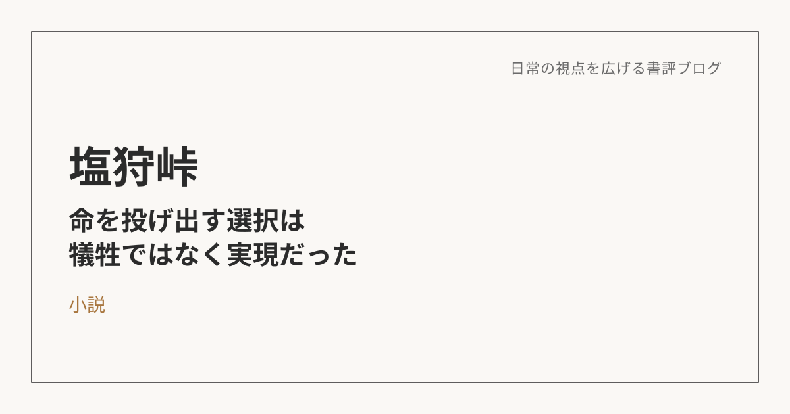
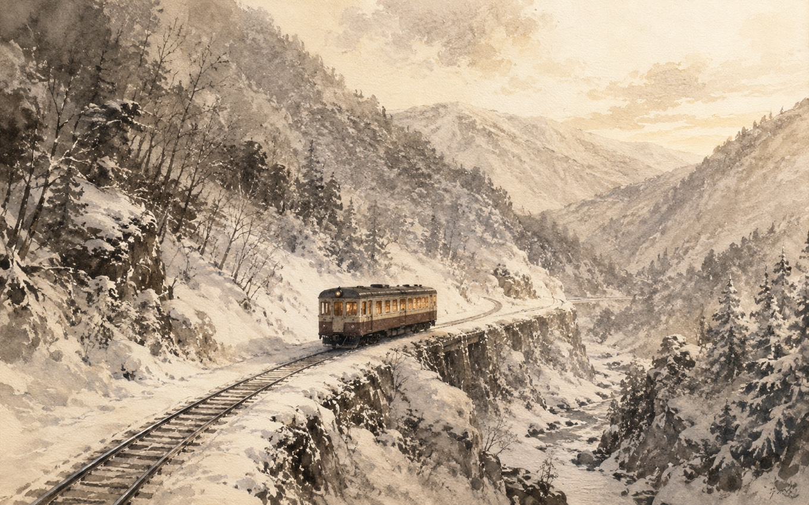

塩狩峠――「自己犠牲」は、本当に何かを失うことだったのか
この本について
三浦綾子による本作は、実在した鉄道事故をもとに、青年・永野信夫の生涯を描いた長編小説。エリートとして周囲から一目置かれながらも、どこか自分中心だった信夫が、ある女性との出会いと信仰を通じて変わっていき、最後には多くの乗客の命を救うために自らの体を投げ出す――という結末を持つ物語。
号泣した記憶を、大人になって追体験する
小学生の頃にこの本を読んで、ラストシーンで号泣した記憶がずっと残っている。信夫が命を投げ出す場面そのものよりも、それを見送ることになる女性・ふじ子の気持ちに感情移入して、涙が止まらなかった。大人になって、あの物語が実際どんな話だったのかを改めて追体験したくなり、再読することにした。
読み進めるうちに、当時の記憶があちこちで呼び覚まされる感覚があった。ただ、大人になった今、印象に残ったのは結末の場面そのものよりも、そこに至るまでの信夫の心の変化だった。

「嫌悪」から「没入」への変化
信夫は物語の序盤、キリスト教という存在にむしろ嫌悪感を抱いている。それは単に宗教が怪しく見えるからではなく、「自分の弱さや罪を認めよ」という教えが、プライドを支えに生きてきた自分の生き方を否定するように感じられたからだろう。
その彼が変わっていくきっかけになったのが、ふじ子という人物との出会いだった。彼女の清らかさという「鏡」に自分を映したとき、信夫は初めて自分の内面にあるエゴイズムに気づいてしまう。「自分は立派な人間だと思っていたが、実は自分のことしか考えていなかったのではないか」という、いわば絶望に近い自己認識。この気づきこそが、彼を信仰へと向かわせていく。
最初はあれほど遠ざけていたものに、最後にはどっぷりと浸っている。この変化の振れ幅の大きさこそが、この物語の核になっている。
自己犠牲ではなく、自己実現だったのかもしれない
最後の場面は、一般には「自己犠牲」として語られる。でも読み返してみると、もう少し違う見方もできる気がしている。
あの瞬間の信夫は、他人のために自分の命を「捨てた」わけではなく、自分が最も納得できる形――多くの人を救うこと――に、自分の命を「使った」のではないか。長い内省の日々を通じて、彼は「自分よりも、他者を生かすことに自分の存在意義を見出す」というところまでたどり着いていた。だとすれば、あのとっさの行動は、何かを失う犠牲ではなく、ずっと追い求めてきた生き方を命懸けで完成させた瞬間だったとも言える。
自分中心の世界から、他人の中の自分へ
信夫の変化を一言でまとめるなら、「自分中心だった世界が、他人を愛すること、他人の中に自分がいるという感覚に変わっていった」ということだと思う。これは特別な信仰体験の話に限らず、誰にでも起こりうる変化の形なんじゃないか。
自分の場合で考えると、これまでは物事を「自分が何を得るか」を起点に見てしまうことが多かった。仕事でも家族との時間でも、「自分にとってどんな意味があるか」がまず先に来る。でも信夫の軌跡を追ってみると、目的語が「自分」から「他者」に置き換わった瞬間に、生き方そのものの手触りが変わっていくのがわかる。「〜のために」ではなく「〜とともに」という視点、そして自分の時間や労力を何に使うかという問いは、大きな決断の場面に限らず、日々の小さな選択の中にも持ち込めるものだと思う。
小学生の頃の涙が単純な「同情」だったとすれば、今回読み返して感じたのは、もう少し違う感覚――自分の軸をここまで他者のために使い切れる人間がいる、ということへの畏敬に近いものだった。
※本記事はNotionに書き溜めた読書メモをもとに、AIの編集サポートを受けて構成しています。